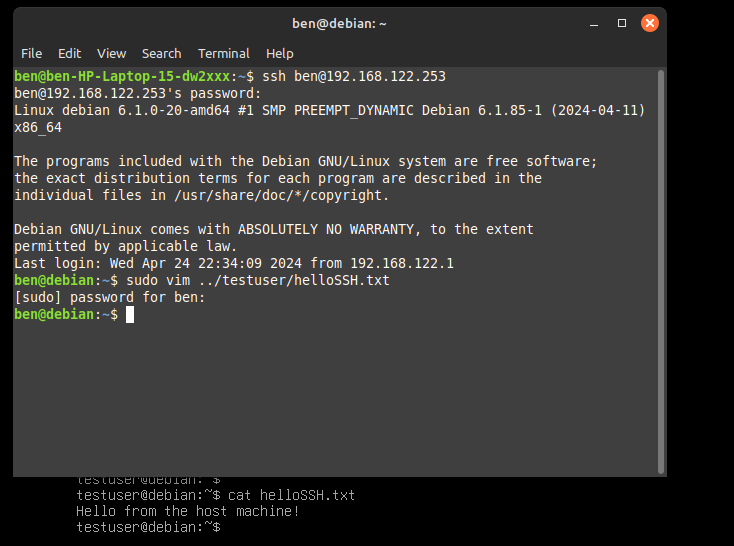

Now that I had users and groups set up, I wanted to enable access to my Debian-12 VM from other machines on my network. I'd previously used ssh to connect to the VPS I use to host my portfolio, so I thought it would be a good idea to set up an OpenSSH server on my VM. Turns out this was far more difficult that I thought, due to a mix of bad luck and me having no idea what I was doing.
First, I checked to see if the OpenSSH server was running on my VM. I did this by running the following command:
sudo systemctl status ssh
Turns out the server was already installed and running, no problems here
Next, I got very confused. A quick google search mentioned bridging and port forwarding, which I naively assumed were neccessary for connecting to ssh via the host machine. I spent an hour trying to set up a bridge, until realizing I needed ethernet for this, and my laptop's ethernet port is broken.
Then I tried port forwarding, and after another two hours of digging through xml files and watching youtube videos, I realized I could just use the IP address of the VM to connect to it, without the need for port forwarding or bridging. Needless to say I felt quite silly.
It turns out, I'd done some damage to the VM's networking while fumbling around with bridges and port forwarding, so I had to restart the VM. After that, I was able to connect to the VM from my host machine using the following (very simple) command:
ssh testuser@192.168.122.253
And just like that, I was able to connect to my VM from my host machine! I tested this by running a few commands and creating files in the VM. I was very happy to have finally gotten this working.
By the end of this process, I was able to connect to my Debian-12 VM from my host machine using ssh. That being said, I feel like I still have a lot to learn about networking and port forwarding. Maybe when I get some time I'll do more research on the topics. For now, being able to ssh into my VM will be very useful for the next steps in this project, allowing copy and paste as well as file transfer between the host and the VM.
